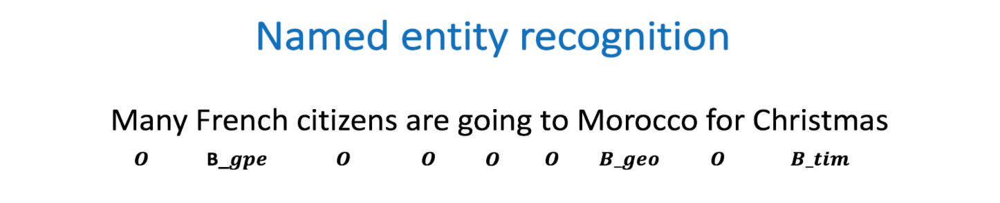
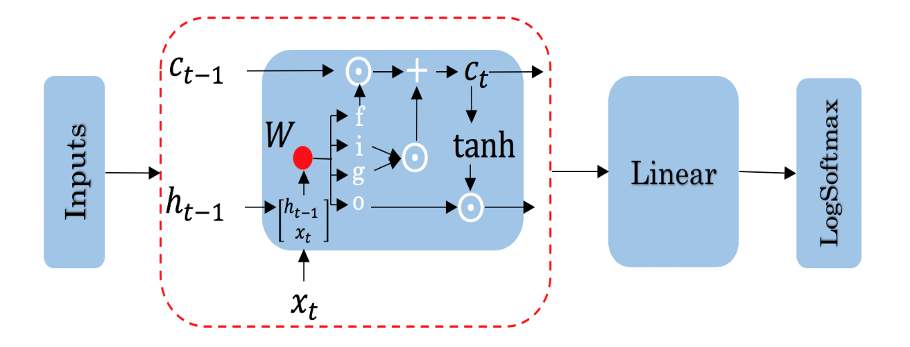

Assignment 3 - Named Entity Recognition (NER)
Welcome to the third programming assignment of Course 3. In this assignment, you will learn to build more complicated models with Trax. By completing this assignment, you will be able to:
- Design the architecture of a neural network, train it, and test it.
- Process features and represents them
- Understand word padding
- Implement LSTMs
- Test with your own sentence
Outline
- Introduction
- Part 1: Exploring the data
- Part 2: Building the model
- Part 3: Train the Model
- Part 4: Compute Accuracy
- Part 5: Testing with your own sentence
Introduction
We first start by defining named entity recognition (NER). NER is a subtask of information extraction that locates and classifies named entities in a text. The named entities could be organizations, persons, locations, times, etc.
For example:

Is labeled as follows:
- French: geopolitical entity
- Morocco: geographic entity
- Christmas: time indicator
Everything else that is labeled with an O is not considered to be a named entity. In this assignment, you will train a named entity recognition system that could be trained in a few seconds (on a GPU) and will get around 75% accuracy. Then, you will load in the exact version of your model, which was trained for a longer period of time. You could then evaluate the trained version of your model to get 96% accuracy! Finally, you will be able to test your named entity recognition system with your own sentence.
1 | #!pip -q install trax==1.3.1 |
INFO:tensorflow:tokens_length=568 inputs_length=512 targets_length=114 noise_density=0.15 mean_noise_span_length=3.0
DeviceArray([ 0, 33], dtype=uint32)
Part 1: Exploring the data
We will be using a dataset from Kaggle, which we will preprocess for you. The original data consists of four columns, the sentence number, the word, the part of speech of the word, and the tags. A few tags you might expect to see are:
- geo: geographical entity
- org: organization
- per: person
- gpe: geopolitical entity
- tim: time indicator
- art: artifact
- eve: event
- nat: natural phenomenon
- O: filler word
1 | # display original kaggle data |
SENTENCE: Thousands of demonstrators have marched through London to protest the war in Iraq and demand the withdrawal of British troops from that country .
SENTENCE LABEL: O O O O O O B-geo O O O O O B-geo O O O O O B-gpe O O O O O
ORIGINAL DATA:
Sentence # Word POS Tag
0 Sentence: 1 Thousands NNS O
1 NaN of IN O
2 NaN demonstrators NNS O
3 NaN have VBP O
4 NaN marched VBN O
1.1 Importing the Data
In this part, we will import the preprocessed data and explore it.
1 | vocab, tag_map = get_vocab('data/large/words.txt', 'data/large/tags.txt') |
vocab is a dictionary that translates a word string to a unique number. Given a sentence, you can represent it as an array of numbers translating with this dictionary. The dictionary contains a <PAD> token.
When training an LSTM using batches, all your input sentences must be the same size. To accomplish this, you set the length of your sentences to a certain number and add the generic <PAD> token to fill all the empty spaces.
1 | # vocab translates from a word to a unique number |
vocab["the"]: 9
padded token: 35180
The tag_map corresponds to one of the possible tags a word can have. Run the cell below to see the possible classes you will be predicting. The prepositions in the tags mean:
- I: Token is inside an entity.
- B: Token begins an entity.
1 | print(tag_map) |
{'O': 0, 'B-geo': 1, 'B-gpe': 2, 'B-per': 3, 'I-geo': 4, 'B-org': 5, 'I-org': 6, 'B-tim': 7, 'B-art': 8, 'I-art': 9, 'I-per': 10, 'I-gpe': 11, 'I-tim': 12, 'B-nat': 13, 'B-eve': 14, 'I-eve': 15, 'I-nat': 16}
So the coding scheme that tags the entities is a minimal one where B- indicates the first token in a multi-token entity, and I- indicates one in the middle of a multi-token entity. If you had the sentence
“Sharon flew to Miami on Friday”
the outputs would look like:
1 | Sharon B-per |
your tags would reflect three tokens beginning with B-, since there are no multi-token entities in the sequence. But if you added Sharon’s last name to the sentence:
“Sharon Floyd flew to Miami on Friday”
1 | Sharon B-per |
then your tags would change to show first “Sharon” as B-per, and “Floyd” as I-per, where I- indicates an inner token in a multi-token sequence.
1 | # Exploring information about the data |
The number of outputs is tag_map 17
Num of vocabulary words: 35181
The vocab size is 35181
The training size is 33570
The validation size is 7194
An example of the first sentence is [0, 1, 2, 3, 4, 5, 6, 7, 8, 9, 10, 11, 12, 13, 14, 9, 15, 1, 16, 17, 18, 19, 20, 21]
An example of its corresponding label is [0, 0, 0, 0, 0, 0, 1, 0, 0, 0, 0, 0, 1, 0, 0, 0, 0, 0, 2, 0, 0, 0, 0, 0]
So you can see that we have already encoded each sentence into a tensor by converting it into a number. We also have 16 possible classes, as shown in the tag map.
1.2 Data generator
In python, a generator is a function that behaves like an iterator. It will return the next item. Here is a link to review python generators.
In many AI applications it is very useful to have a data generator. You will now implement a data generator for our NER application.
Exercise 01
Instructions: Implement a data generator function that takes in batch_size, x, y, pad, shuffle where x is a large list of sentences, and y is a list of the tags associated with those sentences and pad is a pad value. Return a subset of those inputs in a tuple of two arrays (X,Y). Each is an array of dimension (batch_size, max_len), where max_len is the length of the longest sentence in that batch. You will pad the X and Y examples with the pad argument. If shuffle=True, the data will be traversed in a random form.
Details:
This code as an outer loop1
2
3while True:
...
yield((X,Y))
Which runs continuously in the fashion of generators, pausing when yielding the next values. We will generate a batch_size output on each pass of this loop.
It has two inner loops.
The first stores in temporal lists the data samples to be included in the next batch, and finds the maximum length of the sentences contained in it. By adjusting the length to include only the size of the longest sentence in each batch, overall computation is reduced.
The second loop moves those inputs from the temporal list into NumPy arrays pre-filled with pad values.
There are three slightly out of the ordinary features.
The first is the use of the NumPy
fullfunction to fill the NumPy arrays with a pad value. See full function documentation.The second is tracking the current location in the incoming lists of sentences. Generators variables hold their values between invocations, so we create an
indexvariable, initialize to zero, and increment by one for each sample included in a batch. However, we do not use theindexto access the positions of the list of sentences directly. Instead, we use it to select one index from a list of indexes. In this way, we can change the order in which we traverse our original list, keeping untouched our original list.The third also relates to wrapping. Because
batch_sizeand the length of the input lists are not aligned, gathering a batch_size group of inputs may involve wrapping back to the beginning of the input loop. In our approach, it is just enough to reset theindexto 0. We can re-shuffle the list of indexes to produce different batches each time.
1 | # UNQ_C1 (UNIQUE CELL IDENTIFIER, DO NOT EDIT) |
1 | batch_size = 5 |
index= 5
index= 2
(5, 30) (5, 30) (5, 30) (5, 30)
[ 0 1 2 3 4 5 6 7 8 9 10 11
12 13 14 9 15 1 16 17 18 19 20 21
35180 35180 35180 35180 35180 35180]
[ 0 0 0 0 0 0 1 0 0 0 0 0
1 0 0 0 0 0 2 0 0 0 0 0
35180 35180 35180 35180 35180 35180]
Expected output:1
2
3
4
5
6
7
8
9index= 5
index= 2
(5, 30) (5, 30) (5, 30) (5, 30)
[ 0 1 2 3 4 5 6 7 8 9 10 11
12 13 14 9 15 1 16 17 18 19 20 21
35180 35180 35180 35180 35180 35180]
[ 0 0 0 0 0 0 1 0 0 0 0 0
1 0 0 0 0 0 2 0 0 0 0 0
35180 35180 35180 35180 35180 35180]
Part 2: Building the model
You will now implement the model. You will be using Google’s TensorFlow. Your model will be able to distinguish the following:
The model architecture will be as follows:

Concretely:
- Use the input tensors you built in your data generator
- Feed it into an Embedding layer, to produce more semantic entries
- Feed it into an LSTM layer
- Run the output through a linear layer
- Run the result through a log softmax layer to get the predicted class for each word.
Good news! We won’t make you implement the LSTM unit drawn above. However, we will ask you to build the model.
Exercise 02
Instructions: Implement the initialization step and the forward function of your Named Entity Recognition system.
Please utilize help function e.g. help(tl.Dense) for more information on a layer
- tl.Serial: Combinator that applies layers serially (by function composition).
- You can pass in the layers as arguments to
Serial, separated by commas. - For example:
tl.Serial(tl.Embeddings(...), tl.Mean(...), tl.Dense(...), tl.LogSoftmax(...))
- You can pass in the layers as arguments to
- tl.Embedding: Initializes the embedding. In this case it is the dimension of the model by the size of the vocabulary.
tl.Embedding(vocab_size, d_feature).vocab_sizeis the number of unique words in the given vocabulary.d_featureis the number of elements in the word embedding (some choices for a word embedding size range from 150 to 300, for example).
- tl.LSTM:
TraxLSTM layer of size d_model.LSTM(n_units)Builds an LSTM layer of n_cells.
- tl.Dense: A dense layer.
tl.Dense(n_units): The parametern_unitsis the number of units chosen for this dense layer.
- tl.LogSoftmax: Log of the output probabilities.
- Here, you don’t need to set any parameters for
LogSoftMax().
- Here, you don’t need to set any parameters for
Online documentation
1 | # UNQ_C2 (UNIQUE CELL IDENTIFIER, DO NOT EDIT) |
1 | # initializing your model |
Serial[
Embedding_35181_50
LSTM_50
Dense_17
LogSoftmax
]
Expected output:1
2
3
4
5
6
7
8
9
10
11
12
13
14
15
16
17
18
19
20
21
22
23
24
25
26
27
28
29
30
31
32
33Serial[
Embedding_35181_50
LSTM_50
Dense_17
LogSoftmax
]
```
<a name="3"></a>
# Part 3: Train the Model
This section will train your model.
Before you start, you need to create the data generators for training and validation data. It is important that you mask padding in the loss weights of your data, which can be done using the `id_to_mask` argument of `trax.supervised.inputs.add_loss_weights`.
```python
from trax.supervised import training
rnd.seed(33)
batch_size = 64
# Create training data, mask pad id=35180 for training.
train_generator = trax.supervised.inputs.add_loss_weights(
data_generator(batch_size, t_sentences, t_labels, vocab['<PAD>'], True),
id_to_mask=vocab['<PAD>'])
# Create validation data, mask pad id=35180 for training.
eval_generator = trax.supervised.inputs.add_loss_weights(
data_generator(batch_size, v_sentences, v_labels, vocab['<PAD>'], True),
id_to_mask=vocab['<PAD>'])
3.1 Training the model
You will now write a function that takes in your model and trains it.
As you’ve seen in the previous assignments, you will first create the TrainTask and EvalTask using your data generator. Then you will use the training.Loop to train your model.
Exercise 03
Instructions: Implement the train_model program below to train the neural network above. Here is a list of things you should do:
Create the trainer object by calling
trax.supervised.training.Loopand pass in the following:- model = NER
- training task that uses the train data generator defined in the cell above
- loss_layer = tl.CrossEntropyLoss()
- optimizer = trax.optimizers.Adam(0.01)
- evaluation task that uses the validation data generator defined in the cell above
- metrics for
EvalTask:tl.CrossEntropyLoss()andtl.Accuracy() - in
EvalTasksetn_eval_batches=10for better evaluation accuracy
- metrics for
- output_dir = output_dir
You’ll be using a cross entropy loss, with an Adam optimizer. Please read the trax documentation to get a full understanding. The trax GitHub also contains some useful information and a link to a colab notebook.
1 | # UNQ_C3 (UNIQUE CELL IDENTIFIER, DO NOT EDIT) |
On your local machine, you can run this training for 1000 train_steps and get your own model. This training takes about 5 to 10 minutes to run.
1 | train_steps = 100 # In coursera we can only train 100 steps |
Step 1: train CrossEntropyLoss | 3.29933977
Step 1: eval CrossEntropyLoss | 2.27930465
Step 1: eval Accuracy | 0.22279498
Step 100: train CrossEntropyLoss | 0.61237383
Step 100: eval CrossEntropyLoss | 0.37608672
Step 100: eval Accuracy | 0.90983244
Expected output (Approximately)
1 | ... |
This value may change between executions, but it must be around 90% of accuracy on train and validations sets, after 100 training steps.
We have trained the model longer, and we give you such a trained model. In that way, we ensure you can continue with the rest of the assignment even if you had some troubles up to here, and also we are sure that everybody will get the same outputs for the last example. However, you are free to try your model, as well.
1 | # loading in a pretrained model.. |
Part 4: Compute Accuracy
You will now evaluate in the test set. Previously, you have seen the accuracy on the training set and the validation (noted as eval) set. You will now evaluate on your test set. To get a good evaluation, you will need to create a mask to avoid counting the padding tokens when computing the accuracy.
Exercise 04
Instructions: Write a program that takes in your model and uses it to evaluate on the test set. You should be able to get an accuracy of 95%.
Step 1: model(sentences) will give you the predicted output.
Step 2: Prediction will produce an output with an added dimension. For each sentence, for each word, there will be a vector of probabilities for each tag type. For each sentence,word, you need to pick the maximum valued tag. This will require
np.argmaxand careful use of theaxisargument.- Step 3: Create a mask to prevent counting pad characters. It has the same dimension as output. An example below on matrix comparison provides a hint.
- Step 4: Compute the accuracy metric by comparing your outputs against your test labels. Take the sum of that and divide by the total number of unpadded tokens. Use your mask value to mask the padded tokens. Return the accuracy.
</detail>
1 | #Example of a comparision on a matrix |
array([False, True, False, False])
1 | # create the evaluation inputs |
input shapes (7194, 70) (7194, 70)
1 | # sample prediction |
<class 'jax.interpreters.xla.DeviceArray'>
tmp_pred has shape: (7194, 70, 17)
Note that the model’s prediction has 3 axes:
- the number of examples
- the number of words in each example (padded to be as long as the longest sentence in the batch)
- the number of possible targets (the 17 named entity tags).
1 | # UNQ_C4 (UNIQUE CELL IDENTIFIER, DO NOT EDIT) |
1 | accuracy = evaluate_prediction(model(x), y, vocab['<PAD>']) |
outputs shape: (7194, 70)
mask shape: (7194, 70) mask[0][20:30]: [ True True True False False False False False False False]
accuracy: 0.9543761281155191
Expected output (Approximately)1
2
3outputs shape: (7194, 70)
mask shape: (7194, 70) mask[0][20:30]: [ True True True False False False False False False False]
accuracy: 0.9543761281155191
Part 5: Testing with your own sentence
Below, you can test it out with your own sentence!
1 | # This is the function you will be using to test your own sentence. |
1 | # Try the output for the introduction example |
Peter B-per
Navarro, I-per
White B-org
House I-org
Sunday B-tim
morning I-tim
White B-org
House I-org
coronavirus B-tim
fall, B-tim
Expected Results
1 | Peter B-per |